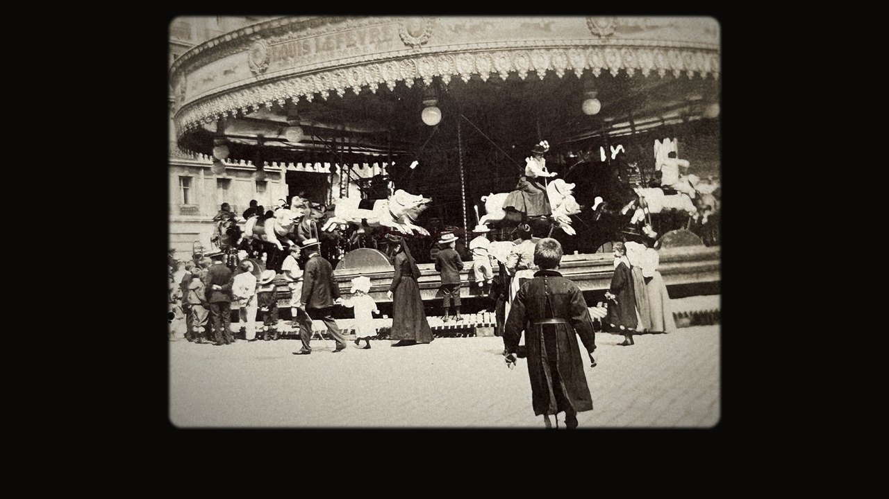

公開準備中ベンヤミン「回転木馬」朗読｜『一九〇〇年前後のベルリンの幼年時代』ベルリン・タイプ稿より
本書 166頁｜ベルリン・タイプ稿｜0分49秒
回転木馬に乗る子どもを描いた一篇。回る台の上で、子どもを取り巻く世界はどのように見えてくるのか。
ヴァルター・ベンヤミン「回転木馬」（Karussellfahrt）の朗読。
『一九〇〇年前後のベルリンの幼年時代』ベルリン・タイプ稿、本書166頁より。
朗読：田中純（訳者）
YouTube で見る画像・映像・音声の出典
- 画像・映像
- Vespermann家の回転木馬
撮影者不詳、1900年頃。Friedrich Heyn製作の回転木馬（1893年製）。Markt- und Schaustellermuseum Essenの写真コレクションに由来。Kulturgut Volksfest「Bodenkarussell Vespermann 1893」掲載。
https://kulturgut-volksfest.de/enzyklopaedie/bodenkarussell-vespermann-1893/ - パッサウのプラーターの回転木馬
1900年頃。© Dering/Pumu München。Kulturgut Volksfest掲載。
https://kulturgut-volksfest.de/enzyklopaedie/0-fruehe-vergnuegungsparks/ - パリの回転木馬のステレオ写真
1900年6月9日、アマチュア撮影（出品説明による）。eBay掲載。
https://www.ebay.de/itm/117028797165 - としまえん「カルーセルエルドラド」の映像
水と緑の遊園地 としまえん、YouTube公開動画。
https://www.youtube.com/watch?v=lMssBVs6ZE0 - ロヴィス・コリント《回転木馬》（Karussell）
1903年。オルデンブルク州立美術文化博物館所蔵。Wikimedia Commons公開（原出典：Zeno.org）。Public domain。
https://commons.wikimedia.org/wiki/File:Lovis_Corinth_Karussell_1903.jpg - 音声
- 自動オルガン
Ohrwurm《Carousel Organ.aif》、2008年。ドイツ・ブルフザールの自動楽器博物館で録音。Freesound #64562。CC0 1.0。テンポを調整。
https://freesound.org/people/Ohrwurm/sounds/64562/